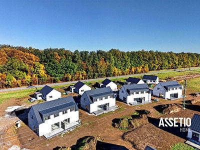
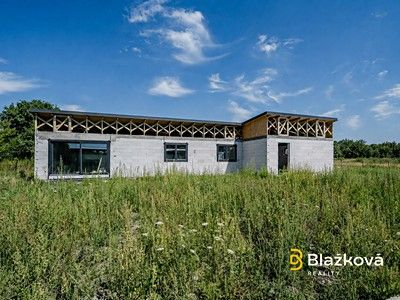
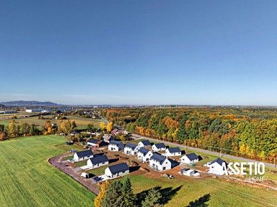
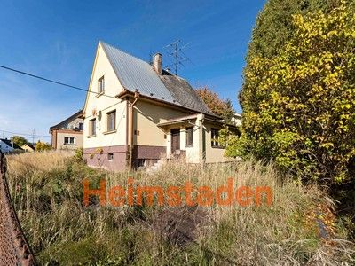
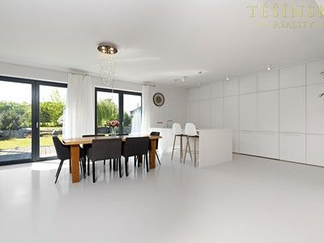
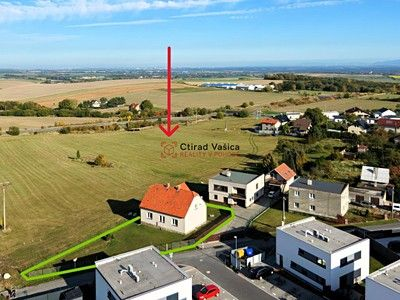
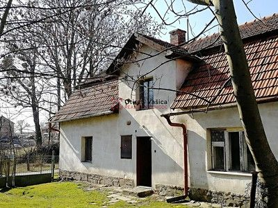
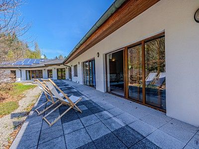

First observed since comparable Sreality scan
Prodej rodinného domu 98 m², pozemek 400 m²
Nošovice, Frýdek-Místek
Not stated → 7,990,000 CZK
Original advert ↗Daily market update · 2026-11-22 · Ostrava + 15 km
Data limitation: Prices are advertised, not completed transaction prices. Disappeared adverts are NOT proof of sold or rented status. Search radius may be unverified for individual locations. "New" means first observed since a comparable complete Sreality scan, not independently verified as newly published. "New to tracker" may reflect expanded or partial portal coverage. Older Sreality IDs and known cross-lists are excluded. Additional monthly rental charges are not reliably supplied in these search cards.

Nošovice, Frýdek-Místek
Not stated → 7,990,000 CZK
Original advert ↗
Stonava, Karviná
2,490,000 CZK → 2,490,000 CZK
Original advert ↗
Prostřední Bludovice, Karviná
12,500,000 CZK → Not stated
Original advert ↗
Záblatí, Karviná
11,999,000 CZK → Not stated
Original advert ↗
Nošovice, Frýdek-Místek
Not stated → 8,990,000 CZK
Original advert ↗
Petřvald, Karviná
4,200,000 CZK → 3,900,000 CZK -7.14%
Original advert ↗
Stonava, Karviná
4,390,000 CZK → 4,390,000 CZK
Original advert ↗
Pustějov, Nový Jičín
4,370,000 CZK → 4,370,000 CZK
Original advert ↗
Dolní Lutyně, Karviná
12,890,000 CZK → Not stated
Original advert ↗
Petřvald, Karviná
4,200,000 CZK → 4,200,000 CZK
Original advert ↗
Podlesí, Karviná
7,700,000 CZK → Not stated
Original advert ↗
Bílov, Nový Jičín
4,590,000 CZK → 4,490,000 CZK -2.18%
Original advert ↗
Rychvald, Karviná
8,850,000 CZK → Not stated
Original advert ↗
Kujavy, Nový Jičín
2,590,000 CZK → Not stated
Original advert ↗
Stonava, Karviná
3,450,000 CZK → 3,450,000 CZK
Original advert ↗
Václavovice, Ostrava-město
13,990,000 CZK → Not stated
Original advert ↗
Butovice, Nový Jičín
5,590,000 CZK → 5,590,000 CZK
Original advert ↗
Darkovičky, Opava
5,500,000 CZK → Not stated
Original advert ↗